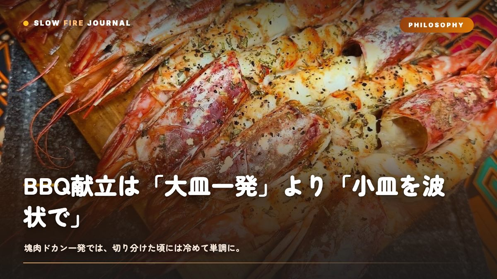

BBQ献立は「大皿一発」より「小皿を波状で」— 熱々を切らさない設計術
苦労して焼いた塊肉を切り分けたら、なんだか場が静まってる…そんな経験、ありませんか。実はこれ、料理の腕ではなく「献立の設計」が原因なんです。この記事では、20分ごとに熱々の一皿が出続ける『波状の献立』を、火力ゾーンと中心温度の数値つきで組み立てていきます。塊肉一発主義から抜け出すと、同じ食材でも満足度がまるで変わりますよ。

結論：塊肉一発ではなく「小皿を波状で」出す
先に結論から言いますね。日本人が心の底で満足するBBQは、大きな塊肉を一発ドカンと出す形式ではなく、小さめの一皿を15〜20分おきに次々と出し続ける「波状（ウェーブ）型」の献立です。これだけは覚えておいてください。
与論島発のYORON BBQでも同じ考え方を大切にしています。日本人の食の本質は「少しずつ、多種多様なものを、常に熱々で」。焼肉屋でみんなが幸せそうなのは、まさにこの3条件が自然に満たされているからなんですよね。塊肉の切り分けが悪いわけじゃありません。ただ「一発主義」は、この3条件をことごとく壊してしまうんです。
| 形式 | 熱々度 | 品数 | 手が空く時間 |
|---|---|---|---|
| 塊肉ドカン一発 | 切る頃には冷める | 1〜2種 | 調理中ずっと待ち |
| 小皿を波状で | 常に出来立て | 5〜8種 | 15〜20分ごとに登場 |
なぜ塊肉一発は「満足しきれない」のか
理由は大きく3つあります。
ひとつめは温度。プルドポークやブリスケットのような塊肉は、焼き上がってから休ませ、切り分け、取り分けるまでに時間がかかります。1.5kgの豚肩を切り分けて8人に配る頃には、最後の一切れの表面温度は50℃を切っていることも珍しくありません。冷めた塊肉にBBQソースをかけるのは、正直に言うと、A5和牛を自家製タレでごまかすのと同じロジックなんですよね。もったいない。
ふたつめは単調さ。どんなに美味しいプルドポークでも、300g食べ続けると味覚は飽きます。人間の舌は「対比」で美味しさを感じるので、味・食感・温度の変化がないと満足が頭打ちになるんです。
みっつめは間。塊肉を10時間育てている間、テーブルには何も出ません。BBQの一番のごちそうは「熱々の一皿がまた来た」という小さな期待の連続なのに、それが完全に途切れてしまう。僕も昔、渾身のブリスケットを黙々と焼いて、いざ切ったら家族が先にお菓子でお腹いっぱい…という悲しい経験があります。
波状献立の設計図 — 3つの発射台を作る
波状で出すには、グリルを「同時に3種類の火が使える状態」にしておくのがコツです。ここが土台なので、数値で押さえていきますね。
ツーゾーン＋アクセルの3ゾーン
- 強火ゾーン（250〜280℃）：炭を厚く敷いた直火側。ソーセージの焼き目、鶏ももの皮、野菜のグリルマークをつける発射台です。
- 中火ゾーン（180〜220℃）：炭を薄めに敷くか、強火ゾーンの縁。豚肩ロース厚切りや魚の杉板焼きを担当します。
- 間接ゾーン（120〜150℃）：炭のない側に蓋を閉めた対流エリア。手羽や厚切り肉をじっくり火入れし、焼けたものを「保温」しておく待機場所にもなります。
この3ゾーンがあると、強火で焼き目、中火で本焼き、間接で保温、という流れが同時進行できます。表面温度はグリルの表示ではなく、必ずプローブ（差し込み式の温度計）で測ってくださいね。蓋付きグリルの表示は実際とプラスマイナス20〜30℃ズレることがあります。
1皿=1〜2人前の小分けにする
波状の肝は「1回に全部焼かない」こと。8人なら、ソーセージは8本を4本ずつ2回に、鶏ももは6枚を3枚ずつ2回に分けて焼きます。こうすると、最初の皿を食べている15分の間に次の皿が焼き上がる。テーブルに空白が生まれません。
具体的タイムライン（4人・約3時間半）
普通のスーパーで揃う食材で、実際に組んでみます。開始を14:00とします。
| 時刻 | ゾーン | 品目 | 温度/中心温度 | 時間 |
|---|---|---|---|---|
| 13:30 | — | 火起こし（チャコールスターター） | — | 20〜25分 |
| 14:00 | 間接150℃ | 手羽先6本（第1弾） | 中心75℃ | 30〜35分 |
| 14:10 | 強火260℃ | 枝豆・エリンギ・ミニトマトの塩焼き | 焼き目まで | 8〜10分 |
| 14:25 | 強火250℃ | ソーセージ4本（第1弾） | 中心72℃ | 12〜15分 |
| 14:45 | 中火200℃ | 杉板サーモン200〜230℃ | 中心53℃ | 8〜12分 |
| 15:05 | 強火270℃ | 鶏もも3枚（皮パリ） | 中心75℃ | 18〜22分 |
| 15:30 | 中火210℃ | 豚肩ロース厚切り2枚 | 中心63℃ | 25〜35分 |
| 16:00 | 強火260℃ | ソーセージ4本（第2弾）＋野菜追い焼き | 中心72℃ | 12〜15分 |
| 16:20 | 強火→間接 | ラムチョップ 表面カリッ→中ロゼ | 中心58℃ | 合計12〜15分 |
| 16:45 | — | 締め：焼きおにぎり・マシュマロ | — | 10分 |
ポイントは、杉板は焼く30分前から水に浸しておくこと。乾いたまま乗せると板が燃えます。手羽先のように20分を超えるものは間接ゾーンでラック（網の台）に乗せ、焦げそうなものはシールド（アルミの遮熱板）を併用すると失敗が激減します。
味の設計は、素焼き・塩・ラブ（乾燥スパイス）で3系統に散らすと単調になりません。ラブをたっぷり付けたものは砂糖が焦げやすいので、中火〜間接ゾーンで焼くのが鉄則です。Butcher's Axeのようなハーブ系を鶏に、Stef the Maoriのような深みのある配合を豚に振り分けると、同じ肉でも別料理に感じられますよ。
よくある失敗と回避
- 全部いっぺんに焼いて渋滞する：網が満杯だと火力が奪われ、どれも生焼け気味に。1回に焼くのは網面積の6〜7割までに抑えます。
- 強火ゾーンだけで回そうとする：ラブや脂で炎が上がり真っ黒に。焦げそうと感じたら即、間接ゾーンへ避難させてください。
- 先に重い塊肉を出す：序盤で満腹になり、後半の品が食べられません。軽い野菜・シーフードから始め、豚・ラムを中盤〜後半に置くのが波状の順番です。
- 保温場所がない：間接ゾーン（120〜130℃）を保温棚として空けておくと、焼けた皿が冷めません。アルミホイルで軽くテントにするとさらに保温できます。
- 締めを用意していない：焼きおにぎりや野菜の追い焼きなど、余った火で作れる締めを1つ決めておくと、火の始末まで気持ちよく終わります。
トラブルシュート
| 症状 | 原因 | その場の対処 |
|---|---|---|
| 皿が出るテンポが空く | 1回の焼き量が多すぎ | 次から半分に分けて2回転にする |
| 肉が冷めて出てしまう | 保温ゾーン未確保 | 間接側125℃にホイルテントで待機 |
| 表面だけ黒く中が生 | 強火に置きっぱなし | 間接ゾーンへ移し蓋を閉めて中心温度で判断 |
| 火力が急に落ちた | 炭が寄って灰をかぶった | トングで炭を寄せ直し、5分ほど蓋開けで空気を送る |
バリエーションと応用
この波状設計は人数と時間で伸縮します。2人なら品目を4〜5種に絞り、2時間で締めまで。10人以上なら発射台の強火ゾーンを2枚のグリルに分け、片方を「焼き目専用」、もう片方を「本焼き＋保温」に役割分担すると回転が上がります。
季節でも組み替えられます。夏は枝豆・とうもろこし・魚介を前半に厚めに、冬は根菜のホイル焼きや厚切り豚を間接ゾーンでじっくり温めて、外気で冷める前に熱々で回す。どの季節でも「軽い→中→重い」「素焼き→塩→ラブ」の2軸で散らせば、5〜8種でも味が渋滞しません。
もし今、10時間かけるブリスケットに憧れて色々調べている途中なら、その探求はぜひ楽しんでほしいです。ただ、いざ家族や友人とやってみると「切る頃には冷めてる」「一発だと間が持たない」という壁に、遠からず突き当たるはずなんですよね。そのときは、3〜4時間で完結して熱々を出し続ける与論島発のYORON BBQのやり方も、選択肢のひとつに入れてみてください。同じ蓋付きグリルのロジックの上に立っているので、これまで学んだ温度の知識はそのまま活きますよ。
よくある質問
塊肉料理は一切やらない方がいいんですか？
いいえ、やめる必要はありません。おすすめは「主役は塊肉、脇を波状の小皿で固める」ハイブリッドです。ただし塊肉は切ったら即、間接ゾーン125℃で保温しながら小分けで出すと冷めません。塊肉だけに全振りして他が空白になる状態を避けるのが目的です。
何品くらい用意すれば多品種として成立しますか？
人数×0.8〜1品を目安に、最低でも5種以上あると満足度がぐっと上がります。4人なら5〜6種、8人なら7〜8種。ただし品数を増やすより、味の系統（素焼き・塩・ラブ）と食材（肉2〜3種＋野菜＋シーフード）を散らすことのほうが体感の満足に効きます。
波状で出すと自分がずっと焼き係で食べられません。どうすれば？
間接ゾーン120〜130℃を保温棚として使い、20分ほど火から離れても崩れない手羽や厚切り豚をそこに置いておくと、焼き係も座って食べる時間が作れます。強火の焼き目付けだけ集中し、あとは蓋を閉めて対流に任せるのがコツです。